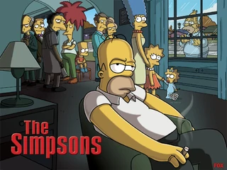
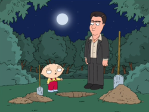

Referencias en otras series de televisión
Los Simpsons
Los Simpsons es una sitcom animada americana que a referenciado numerosas veces Los Soprano.
En el episodio "Papá tiene una nueva placa"(2002), la mafia condce a través de Springfield hasta la casa de Los Simpsons mientras suena el tema "Woke up this morning" y parodiando así la intro de Los Soprano.
 Más tarde en el capítulo "El cocinero, el bribón, la mujer y su Homer"(2006), cuando Tony el Gordo lleva a los niños a clase en su Lincoln Navigator, se escucha el tema principal de Los Soprano. El poster promocional de ese capítulo fue también una parodia de el poster promocinal de la temporada 6.
Padre de Familia
Padre de Familia en otra sitcom animada americana.
 Los Soprano han sido referenciados una vez en esta serie. Al final del episodio "Rivalidad Fraternal"(2006), Christopher Moltisanti hace una aparición ayudando a cavar un hoyo a Stewie Griffin para plantar un arbol, a pesar de que originalmente pensaban enterar el cadaver de Bertman.